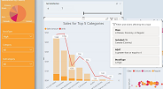
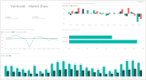
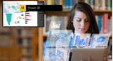
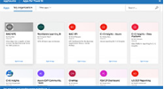
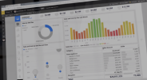

How to use the new filter pane experience
2 minute view

Explore Power BI Desktop with sample reports

Publish a report to the PBI Service
5 minute view

Useful video for first time user 2
6 minute view

Useful video for first time user 3
2 minute view